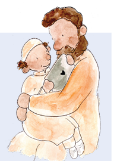
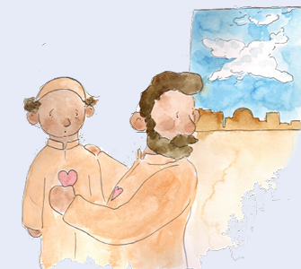
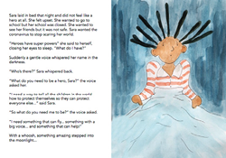
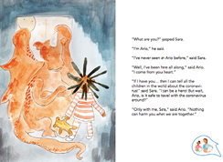

KEY MESSAGE 1 Staying healthy
CHAT 1
Let’s CHAT
Before we get into the story more, let’s chat about the coronavirus and how you can protect yourselves and others from the virus. Tell me what you already know about the virus.

ASK the children
Tell me what you already know about the virus.
Children respond with the information about the coronavirus that they know. Children might say...
-
“The coronavirus crawls onto you from tables and chairs and even pieces of paper.”
-
“The coronavirus is fake.”
-
“The coronavirus kills people.”
Let’s CHAT
Thanks for sharing what you know. Seems you have been listening well to all that is being said around you.
The coronavirus is causing a disease called COVID-19. It is a new virus and the disease is contagious - that means it passes from one person to another. The disease became a global pandemic since it spread to countries around the world.
The coronavirus moves from one person to another through droplets that come from the mouth or nose of an infected person who talks, laughs, cries, coughs or sneezes. These droplets fly into the air and can land in the mouths or noses of people close-by. The droplets can also land on a table, chair or other surface and we if we touch it and touch our eyes, nose or mouth we can get infected.
You need to tell me right away if you or anyone you know has any of the virus symptoms like headache, cough, sneezing, body aches, fever and loss of sense of smell and/or taste. We need to be extra careful since even having one symptom can mean you are infected and can pass the virus to others. The good news is that most people only get mildly sick. However, even if they feel better in a few days they might still be contagious and need to stay home and keep away from everyone until their doctors say they are no longer contagious.
It’s a sneaky virus because many people have the virus but feel fine. They can still give it to someone else even if they don’t mean to do it. I know it all sounds scary. That’s why we are talking and reading this book. I am doing everything I can to keep us healthy. I want to be sure you know how to protect yourself and not get the virus!
I know you want to go out to play with your friends. But, we must go out safely. To avoid the droplets from someone who is infected, it is best to wear a mask. We also need to physically distance to avoid the droplets so we must stay at least 1 meter away from another person.
The best protection is washing with soap and water so we will clean our hands more than ever. If we avoid touching our eyes, nose and mouth, even if we touch the virus we can avoid bringing it into our body.
All over the world, people, like us, are reading this storybook and learning how to prevent the spread of the virus.

ASK the children
Do you have any questions about the virus before we continue to read?
Children ask questions and the adults answer their questions.
Let’s CHAT
The virus has turned our world upside down. Let’s continue to read about Sara and see what we can do to stay safe...
Read these pages of My Hero is You

